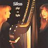

Celtic Lyrics Corner > Artists & Groups > Sìleas > Play On Light > Mo Dhomhnullan Fhéin
|  | Mo Dhomhnullan Fhéin |
| Credits : | Traditional; lyrics by Niall MacLeod; arranged by Sìleas |
| Appears On : | Play On Light |
| Language : | Gàidhlig (Scottish Gaelic) |
| Other Versions : |
"
Mo Dhòmhnallan Fhèin
" on Julie Fowlis' album Cuilidh
" Mo Dhòmhnullan Fhèin " on Flora MacNeil's album Orain Floraidh |
| Lyrics : | English Translation : |
| 'Nuair chruinn'cheas an òigridh | When the young people gather |
| Gu mire 's gu sòlas | For fun and delight |
| Tha mise 'nam ònar | I am alone |
| 'S an t-seòmar gun ghleus | And sad in the room |
| A'cuimhneachadh còmhraidh | Remembering the talk |
| An fhleasgaich a leòn mi | Of the young man who hurt me |
| 'S a'ghaoil thug mi òg | And the love I gave when I was young |
| Do mo Dhòmhnullan fhéin | To my own Donald |
| Tha m'athair 's mo mhàthair | My father and mother |
| Ri gearan 's ri cànran | Are complaining and saying |
| 'S a'cantainn nach fheàrr mi | That I was no better |
| Na pàisde gun chéill | Than a child with no sense |
| Mo ghaol thoirt a dh'òigfhear | To give my love to a young man |
| Tha daonnan a'seòladh | Who is always sailing |
| 'S a'sgaoileas a stòras | And spreading his wealth |
| Gun ghò ris gach té | About without heed to each girl |
| Tha bliadhn' agus còrr bho | It's more than a year |
| Na thriall e bho 'eòlas | Since he traveled out of sight |
| 'S tha 'iomhaigh cho beò dhomh | And his image is as alive to me |
| 'S ged sheòladh e 'n dé | As if he'd sailed yesterday |
| Cha ghéill mi do dh'òigfhear | I won't submit to a young man |
| 'S cha tréig mi na bòidean | And I won't go back on the vows |
| A sheulaich mi òg | I made when I was young |
| Do mo Dhòmhnullan fhéin | To my own Donald |